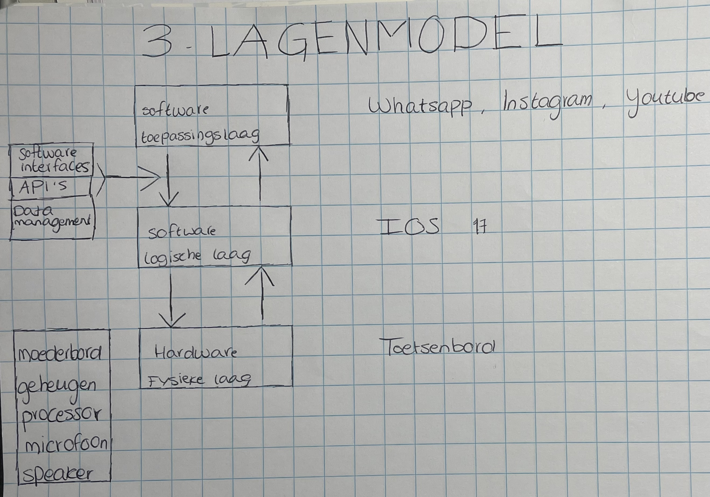

Het Drielagenmodel
Het Drielagenmodel is een model in de IT en architectuur dat systemen in drie duidelijke lagen verdeelt: de Toepassingslaag, de Logische laag en de Fysieke laag. De Toepassingslaag legt uit wat een organisatie wil bereiken met haar bedrijfsprocessen en welke applicaties hierbij betrokken zijn. In de Logische laag worden de informatiestromen en datamodellen vastgesteld. Hier wordt vastgesteld op welke manier de informatie wordt verwerkt om de processen te helpen. Uiteindelijk beschrijft de Fysieke laag de technische infrastructuur, waaronder servers, netwerken en hardware die essentieel zijn voor het uitvoeren van applicaties en dataverwerking. Dit model geeft inzicht in de verbinding tussen processen, informatie en technologie, wat organisaties helpt om effectiever te plannen en zich aan te passen aan veranderingen. Ik heb een afbeelding van het Drielagenmodel van mijn eigen telefoon erbij toegevoegd. Dit is een goede manier om je een duidelijk beeld van het Drielagenmodel te geven.
